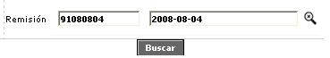
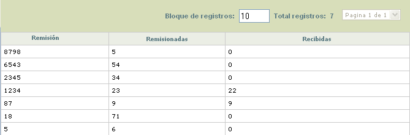

Consulta de pl�sticos remisionados y recibidos |
Este formulario cuya funcionalidad tiene validez solo en el caso que el campo Control de remisi�n de pl�sticos, contenido en la opci�n Par�metros operativos se encuentre en 'Si', le permite a la entidad conocer a manera de resumen general la cantidad de pl�sticos que le han sido entregados a los proveedores encargados de efectuar el realce de las tarjetas, la cantidad de tarjetas ya realzadas que ellos han devuelto a la entidad y la cantidad pendiente de entrega.
Para el fin anterior, el sistema utiliza la informaci�n proporcionada a partir de la generaci�n del archivo de realce y el registro del n�mero de remisi�n asociado con los registros contenidos en dicho archivo para determinar la cantidad de pl�sticos entregados al proveedor del realce, y por otra parte el cargue del archivo para control de inventario mediante el cual se controlan la cantidad de pl�sticos que han sido devueltos a la entidad despu�s que el proveedor le ha efectuado el realce y embosado correspondientes.
El formulario cuenta con un filtro inicial que le permite al usuario consultar de la lista de valores adjunta, el n�mero de remisi�n sobre la cual se desea consultar el estado de remisionadas versus recibidas.

Una vez consultada la informaci�n mediante el bot�n buscar, en el formulario se muestran todos los registros que coincidan con la remisi�n. Si el actor no selecciona ning�n valor de la lista, al ejecutar la consulta el sistema trae la informaci�n de todas las remisiones existentes en la base de datos.

Descripci�n de campos
Remisi�n |
Campo que muestra el n�mero de la remisi�n a la que corresponden las cantidades remisionadas y recibidas desplegadas por el sistema. |
Remisionadas |
En este campo se indica la cantidad de plasticos que le fueron entregados al proveedor del realce para el embosado de las tarjetas. |
Recibidas |
Campo que despliega la cantidad de pl�sticos realzados que el proveedor de realce le ha devuelto a la entidad, correspondientes a cada remisi�n, los cuales son descargados a través del Cargue archivo de inventario. |